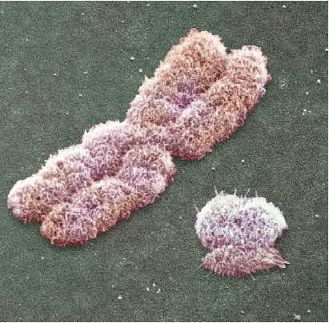

It’s
every man’s secret fantasy: a world, exclusively inhabited by women. Well
guys, have we got news for you. One day, the dream could come true! But before
you straighten your tie, there’s something you should know. In a world
without men... Well, humanity dies out.
Still, the future of mankind is what’s at stake. You see, it’s a war
between boys and girls -- literally. And here’s the latest news from the
battlefield: the women are winning. At least, that's what it looks like. The girls are about to wipe the boys from
the face of the earth.
|  |
|
|
As
you may know, there are two kinds of sex chromosomes: X and Y. If you
inherited two X’s at conception
(one X from every parent), you’re a woman. When your father gave you a
Y-chromosome, it adds up to XY -- which stands for man. All in all, the
Y-chromosome is the thing that makes a man a man. Well, apart from that other
thingy, that is.
On Y, you’ll find all the stuff that a man
needs. You’ll find genetic instructions for how to brew semen,
and how to grow a trunk -- no, a little lower, if you please. If there exists
a gene for watching football and telling lame sex jokes, you’ll definitely
find it on the Y-chromosome.
But on Y, you’ll also find stuff that is harmful to women. For example: sperm contains chemicals that attack the woman’s body. Really! Semen comes with chemicals that shut down the woman’s immune system, so that it can make it into the womb alive.
That's
why X, the female chromosome, hates Y. In response, X is constantly throwing all kinds of wicked
chemicals at Y. X is killing Y.
Take a look through the microscope, and you can immediately see Y is in
trouble. Y is a tiny, crumpled
chromosome -- not exactly a proud symbol of manliness. Ever since Y split off
from the other chromosomes, some 300 million years ago, its number of genes
went down from about 1,000 to 80. How did it ever get so
tiny? You guessed it: that's because of the female chromosome's attacks.
But even without a microscope, the signs are clear. The fact that
some people are gay or transsexual could be a direct consequence of the battle
between the X- and the Y-chromosome, some geneticists think.
|
|
And
there are more grizzly clues. For example,
every now and then, doctors coincidentally stumble upon a woman who has XY for
chromosomes -- the ‘male’ combination. Somehow these ladies'
X-chromosomes have found a
way to disable the Y-chromosome.
And in 1947, a French hospital admitted a female patient who gave birth to a
baby girl. The woman wasn’t the least surprised. All births in her
family were females, she told the doctors. Scientific investigation confirmed
this. Somehow, the family’s genes had found a way to overcome the
‘man-problem’. Her family had learned how to kill Y. And now, the family's
women no longer gave birth to any boys.
Perhaps the most spine-chilling clue comes from the men. As we speak, 1 to 2
percent of all men is infertile because of a malfunctioning Y-chromosome! That
doesn't seem like much, but it is an astonishing number, because the defects
cannot have been inherited (because they lead to infertility). So in other
words: 1 to 2 percent of all men have their Y-chromosome disabled during their
life!
You don’t have to be a rocket scientist to see where
that could lead. A couple of thousands of years more, and Y could be
history. Suddenly, you would see the number of men dropping sharply. According
to an estimate of the British geneticist Brian Sykes, it could take only 5,000
generations before the world turned into a place almost exclusively inhabited
by women.
No,
you dirty little sod, that’s NOT a man’s paradise. Indeed; with the
numbers of men falling, probably everyone around will be craving for your
semen. But it will most likely not be quite like you picture it. Instead of
endless erotic nights, think of handing your goody over to the nearest
fertility clinic, where the female doctors will try to impregnate as many
women as possible with your increasingly rare sperm cells.
|
|
They won’t encourage you to start a harem or so.
Sex would be an intolerable waste of sperm cells. And besides, you can’t
afford risking a heart attack while practicing the world oldest sport. Your
semen has become the most valuable fluid on earth now! The women might even
decide to keep the last men captive, like a priceless piece of kettle.
And
how’s this for your world-without-men. There will be no one to watch the
games with. No one to talk about cars with. In fact, there will be no football
anymore and no fight movies. You
will be heavily discriminated against by all these giggling, chit-chatting
GIRLS you’ll see everywhere. It will be a lonely existence. If you’re a
guy, that is.
And the obvious downside: in the end, everyone will be dead. Without men, no
babies. Without babies, no mankind. So we’d clone ourselves, you say? Well
-- not too many people know of it, but the latest scientific insight is that
this is very, very problematic. Clones are full of genetic errors, causing
them to die early. And it’s still undecided if that’s a problem that can
ever be solved.
So: Exit Mandi?
|
|
On the other hand: the sex
chromosome mishap isn't unique. We know of at least three animals where the
women are winning. Take the eggfly butterfly (Hypolimnas bolina) of Australia.
In the 1970s biologists discovered that most of the butterfly’s offspring is
female -- almost half of all males mysteriously die before birth. Exactly the
same sinister effect was found for the two-spot ladybird (Adalia bipunctata).
Even
more eery is the case of another insect, the buterfly Acrea encedon. As
we speak, there’s only 3 percent boy butterflies left, with the ladies
taking on 97 percent of the population -- and rising!
On the other hand, there's the case of a small rodent from Turkey called the
mole vole (Ellobius lutescens). Millions of years ago, the X-chromosomes in
this animal succeeded in eliminating the Y-chromosome. But the rodent did
something remarkable. It evacuated all male genes to other genes. This quirk
of nature still astounds biologists. But it also indicates that men in theory
should be able to overcome the attack of the girls.
So
in the end, what will happen? Nobody knows, the jury is still out. On the one
hand, some geneticists point out that X is in the majority. Since
women have two X’s and men one X and one Y, X outnumbers the Y-chromosomes
by three to one.
But on the other hand, some researchers suspect foul play. Perhaps the
doomsayers are only making fun of Y's small size. While having a smaller one
doesn't necessarily mean that it won't function. (Yes, yes, I know...)
Still,
like most of the scenarios outlined on Exit
Mundi, the one with the chromosomes already happened once - almost. Somewhere in our
prehistoric past, X seems to have launched a massive attack on Y. It must have
been a very close call. But Y succeeded in repairing itself at last. We
can tell this has happened because of certain scars that are still detectable on the
male chromosome.
Is that comforting, proof that Y can deal with the attacks of the girls? Or
has it weakened Y, and should we worry all the more about the next attack?
Better keep an eye on those birth statistics, guys...